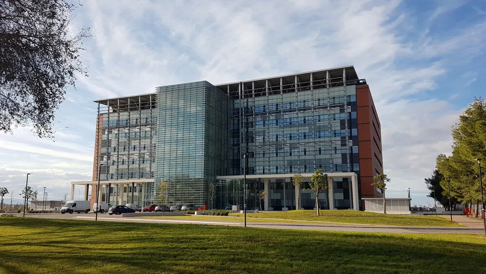

Dove
La Neurochirurgia del Policlinico Riuniti di Foggia si trova al 3° piano del DEU, il nuovo Dipartimento di Emergenza-Urgenza del Policlinico. Le sale operatorie sono al 6° piano dello stesso edificio.

Le tecnologie
- 01NeuronavigazioneUn computer collega le immagini di risonanza e TAC del paziente alla posizione reale degli strumenti e guida il chirurgo durante l’intervento, come un navigatore satellitare.
- 02Microscopio robotizzatoIngrandisce e illumina il campo operatorio e permette di eseguire un’angiografia a fluorescenza durante l’intervento, utile per gli aneurismi.
- 03EsoscopioUna telecamera ad alta definizione con visione 3D che mostra il campo operatorio su un monitor, con il chirurgo in una posizione più ergonomica.
- 04NeuroendoscopiaEndoscopi sottili per raggiungere i ventricoli cerebrali, la base cranica attraverso il naso o l’orbita, e la colonna vertebrale.
- 05Monitoraggio neurofisiologicoControlla in tempo reale le vie del movimento e della sensibilità durante l’intervento sul cervello e sul midollo spinale.
- 06Fluorescenza (5-ALA)Una sostanza assunta prima dell’intervento rende fluorescente il tessuto tumorale e aiuta a distinguerlo da quello sano.
- 07Laser CO2Permette di asportare alcuni tumori con grande precisione. Nel 2019 è stato usato a Foggia per la prima volta per rimuovere un grosso meningioma.
- 08Endomicroscopia laser confocalePermette di osservare le cellule durante l’intervento. È un ambito di ricerca del gruppo del Dott. Colamaria.
Perché contano
Questi strumenti non sostituiscono l’esperienza del chirurgo, ma la rendono più precisa: aiutano a pianificare la via più sicura, a riconoscere le strutture da rispettare e a verificare il risultato già in sala operatoria.